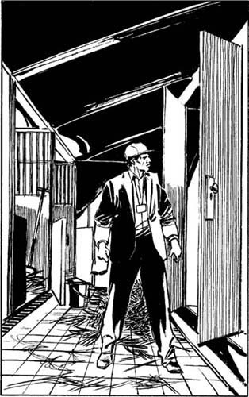

5
Listen to Part 1:

Chiếc Xe Địa Hình Đỏ
Cửa của một số chuồng ngựa để mở. Tôi bước vào chuồng và quan sát xung quanh. Có một số chuồng khá nhỏ - chúng chỉ đủ cho hai con ngựa. Nhưng một số chuồng khác thì lớn hơn nhiều - đủ chỗ cho năm con ngựa trở lên. Nhiều chuồng bị khóa chặt. Tôi nhìn qua cửa sổ vào một số chuồng trong số chúng. Mỗi chuồng đều có số hiệu.
Tôi thấy hai người đàn ông dắt ngựa ra từ một chuồng nhỏ - Chuồng số 32. Họ đưa chú ngựa vào trong xe kéo rồi lái đi. Khu vực chuồng ngựa khá nhộn nhịp và chẳng ai để ý tới tôi. Lúc này đã là buổi chiều tà. Nhiều chú ngựa được dẫn trở về sau khi tập luyện trên đường đua. Các nài ngựa dẫn chúng về chuồng để nghỉ ngơi.
Tôi đi bộ dọc theo những con đường giữa các chuồng ngựa.
‘Tôi sẽ không tìm thấy Thủ Lĩnh trong đây,’ tôi nghĩ. ‘Và cũng chẳng học được thêm điều gì nữa. Tôi cần phải gặp lại Sandy Bonner. Tôi sẽ quay về Los Angeles ngay bây giờ. Tối nay Sandy sẽ điện cho tôi.’
Bỗng nhiên, tôi thấy một chiếc xe địa hình 4 bánh màu đỏ kéo theo xe kéo. Nó ở gần một chuồng ngựa lớn - Chuồng số 14 - cách tôi khoảng một trăm mét. Một người đàn ông cao, gầy và rám nắng đang đóng cửa chuồng.
‘Liệu đây có phải chiếc xe địa hình 4 bánh mà tôi thấy ở trang trại của Sandy không?’ Tôi tự hỏi. ‘Tôi không biết. Ở Los Angeles có vô số xe địa hình 4 bánh màu đỏ. Và có tới hàng nghìn gã đàn ông cao, gầy và rám nắng.’
Một phút sau, chiếc xe địa hình 4 bánh màu đỏ chạy ngang qua tôi. Nó đi về phía cổng ra vào. Có hai người trong xe. Khi xe chạy qua tôi, tôi thấy khuôn mặt của tài xế. Hắn chính là gã đàn ông cao gầy mà tôi thấy ở trang trại của Sandy. Đó là gã đàn ông mà Sandy đã đập. Tôi không thể nhìn rõ người còn lại. Là đàn ông hay đàn bà? Tôi không biết.
Tôi dõi theo chiếc xe. Xe dừng lại ở cổng một lúc rồi rời khỏi khu vực chuồng ngựa. Tôi đi về phía Chuồng số 14. Chẳng có ai ở gần chuồng. Cửa chuồng đóng chặt. Tôi đến bên hông chuồng và cố nhìn vào qua cửa sổ. Nhưng tôi không thể nhìn rõ vào bên trong. Có một tấm gỗ được lắp bên trong cửa sổ.
Tôi thò tay vào túi lấy bộ chìa khóa đặc biệt. Bộ chìa khóa đặc biệt của tôi có thể mở được nhiều loại cửa khác nhau. Có lẽ tôi có thể mở được cửa chuồng bằng một trong số những chiếc chìa khóa này.
Listen to Part 2:
Tôi tra một trong những chiếc chìa khóa vào ổ khóa của cửa chuồng. Tôi cố vặn chìa khóa, nhưng chìa không quay. Tôi tra một chìa khóa khác vào ổ khóa. Vẫn không được! Đoạn, tôi nghe thấy tiếng ô tô đến gần khu vực chuồng ngựa. Tôi không muốn có ai nhìn thấy mình gần Chuồng số 14. Tôi tra chiếc chìa khóa thứ ba vào ổ khóa. Lần này, tôi mở được khóa! Tôi nhanh chóng mở cửa chuồng và bước vào trong. Tôi khóa cửa lại phía sau mình.
Chuồng ngựa tối thui. Có mùi ngựa và rơm rạ. Tôi quan sát xung quanh. Dọc bức tường bên trái tôi, có những ô nhỏ cho ngựa. Nhưng không có con ngựa nào ở đây. Tất cả các ô đều trống rỗng. Bức tường bên phải thì không có chuồng nào cả. Cũng chẳng có cửa ra vào hay cửa sổ nào trên bức tường đó. Nhưng có một chiếc tủ lớn dựa trên tường, ngay giữa chiều dài của bức tường. Chiếc tủ cao ba mét và rộng hai mét. Trong tủ chẳng có gì cả - tủ trống rỗng.

Chiếc tủ cao ba mét và rộng hai mét.
Rồi tôi nghe thấy một tiếng động. Tiếng động phát ra rất gần tôi. Liệu tiếng đó phát ra từ chiếc tủ lớn không? Không, tủ trống rỗng. Và cũng không có ai trong chuồng. Tôi không hiểu.
Tôi mở hé cửa chuồng rồi nhìn ra ngoài. Tôi bị sốc! Chiếc xe địa hình 4 bánh màu đỏ kéo theo xe kéo đã quay lại. Xe đang lùi về phía cửa chuồng. Tôi vội đóng cửa lại rồi lại nhìn xung quanh. Tôi có thể trốn ở đâu đây? Có một đống rơm ở góc chuồng. Tôi chạy đến góc chuồng và ẩn núp dưới đống rơm.
Tôi nghe thấy tiếng mở cửa chuồng. Đột nhiên, chuồng sáng sủa hơn hẳn. Rồi tôi nghe thấy tiếng xe và tiếng xe kéo vào chuồng. Tôi nghe thấy có ai đó mở cửa sau xe kéo. Tôi nằm im. Tôi chờ đợi. Tôi nghe thấy tiếng bước chân chuyển động trong chuồng.
Vài phút sau, tôi nghe thấy tiếng có người đóng cửa xe kéo. Họ mở cửa chuồng. Xe và xe kéo lại rời khỏi chuồng rồi dừng lại ở bên ngoài. Tôi nghe thấy tiếng có người đóng và khóa cửa. Chuồng lại tối sầm đi. Rồi tôi nghe thấy tiếng xe rời đi. Tôi đã an toàn!
Tôi nằm im dưới đống rơm và chờ đợi. Có rơm trong tai và trong mũi tôi. Tôi nằm đó chờ đợi rồi lắng nghe động tĩnh trong vài phút.
Rồi tôi đứng dậy đi đến cửa chuồng. Tôi nhìn quanh. Chuồng rất tối và tôi suýt thì vấp ngã vào thứ gì đó. Bây giờ trong chuồng có nhiều rơm hơn, nằm gần cửa. Và còn có một bao thức ăn cho ngựa.
Listen to Part 3:
‘Có lẽ lát nữa sẽ có người dắt ngựa vào đây,’ tôi nghĩ. ‘Tôi phải nhanh chóng rời khỏi đây.’
Tôi mở khóa và mở cửa chuồng. Không thấy có ai bên ngoài. Tôi bước ra khỏi chuồng và quay lại. Tôi định sẽ khóa cửa chuồng.
Đột nhiên, đầu tôi đau nhói kinh khủng. Có ai đó đã đánh vào đầu tôi. Có ai đó đánh tôi một cú rất mạnh. Tôi ngã gục xuống đất.
Một giọng đàn ông nói: ‘Cậu đúng rồi đấy, Dick. Có đứa nào đó trốn trong chuồng.’
Rồi ai đó chụp một chiếc túi lên đầu tôi. Và có người trói chặt hai tay tôi ra đằng sau bằng một sợi dây thừng.
Tôi nằm trên đất và chờ đợi. Bước tiếp theo là gì đây? Có một cơn đau dữ dội trong bụng tôi, sau đó là ở cánh tay và cuối cùng là ở chân. Có ai đó đang đá tôi rất mạnh. Có người đang đá tôi liên hồi. Liệu tôi sắp chết không?
Rồi một giọng đàn ông khác cất tiếng.
‘Đừng giết nó! Tao muốn hỏi nó vài câu!’ Người đó nói.
Họ dừng đánh.
‘Này, anh bạn,’ người đàn ông thứ hai nói. ‘Anh làm gì trong chuồng ngựa thế? Nói đi! Nếu anh không nói, tao sẽ giết anh!’
Listen to Part 4:
Tôi suy nghĩ trong chốc lát. Có người lại đá tôi. Lần này, có người đá vào lưng tôi. Phải là Dick không? Dick là ai đây? Dick Gates ư? Lại thêm một cú đá nữa!
‘A-an n-n-nhân viên b-b-bảo vệ,’ tôi nói. ‘Tôi là cán bộ của trường đua. Tôi đến kiểm tra an ninh.’
Một bàn tay sờ vào tấm thẻ an ninh màu vàng.
‘Hắn là cán bộ,’ Dick nói. ‘Chúng ta sẽ làm gì?’
‘Bỏ mặc hắn ở đó,’ giọng nói đầu tiên nói. ‘Hắn không nhìn thấy mặt chúng ta đâu.’
Tôi nghe tiếng hai người đàn ông bước đi. Tôi nằm trên đất. Tôi không thể nhìn vì có túi trùm trên đầu. Tôi không thể nói được. Tôi không thể đứng dậy. Hai tay tôi bị trói ra phía sau. Cả cơ thể tôi đau nhói. Tôi ngất đi.